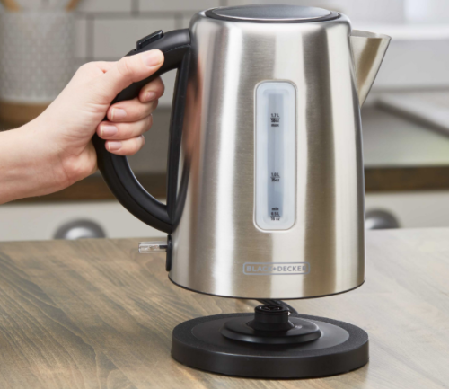
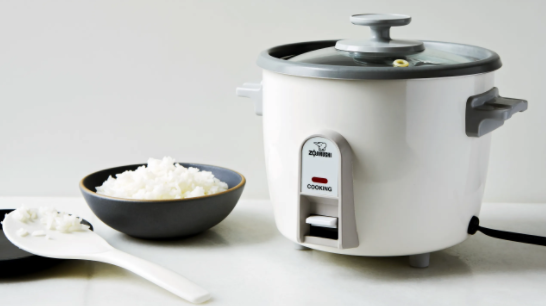

1/3

Ding ding ding! You guessed it; an electric water kettle is essential for creative cooking! It is a good source of heat and very versatile. Any electronic water kettle should do, but I recommend getting one that is a decent size and with a wide opening. If you get a large kettle, that just means more liquids and foods you can make. If the opening is wide, it allows for easier cleaning and more creative ways to cook foods other than liquids. It is an efficient and tidy way for you to boil way with the click of a button. You do not need to worry about spillage, the stove, fire, etc. It puts your mind at ease, my friend. Additionally, you can make soups, make pasta, and even hotpot with it. Check out my recipes page for more information on how I use an electric water kettle. 😊
2/3

One of my all-time favorites; an electric rice cooker. This tool has literally been my ride or die when exploring new meals. In a dorm room without a kitchen? No stove? Have no fear, for an electric rice cooker is all of that. See, there is an instant pot, but waste your money when you can literally perform the same functions with a regular rice cooker? Here’s a secret I discovered in college; objects have many purposes and functions than their names entail. A rice cooker is not just for cooking rice. It is a non-stick cooking bowl on top of a source of heat. Just think about that, does that sound familiar? A pan or pot over a stove can also be considered as a cooking bowl placed on top of a source of heat. Wa-la~! Come check out my recipes to navigate through my explorations of using a rice cooker to makes stews, stir-fry, and even cake! Yep, it is possible to make a cake in a rice cooker.
3/3
Spices are unbelievably important when it comes to creative cooking. Spices are inexpensive and amazing ways to completely change the flavor profile of a dish. They are great at elevating an dish to the new level, delicious~! I think I might actually have more spices than ingredients, haha. Below is a list of spices that I always have with me. With these spices in my rack, I can make dishes from many different cuisines. Feel free to be inspired to curate your own spice list based off your own preferences. Some of my favorite are garlic powder, onion powder, cumin powder, all-purpose seasoning, and five-spice seasoning!
❮
❯